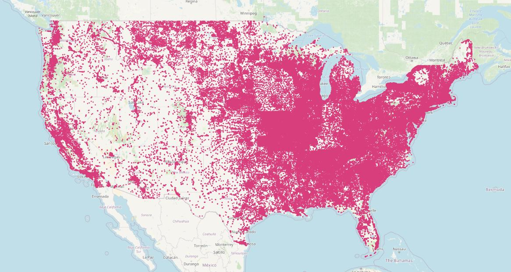
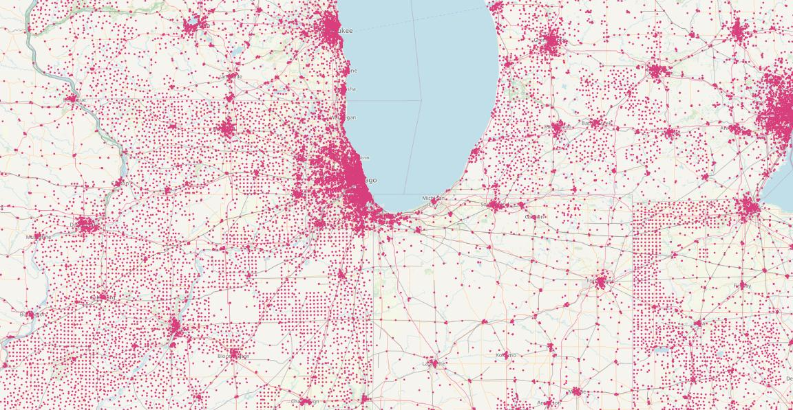
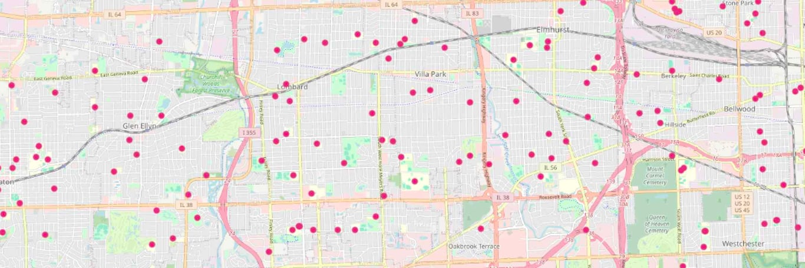
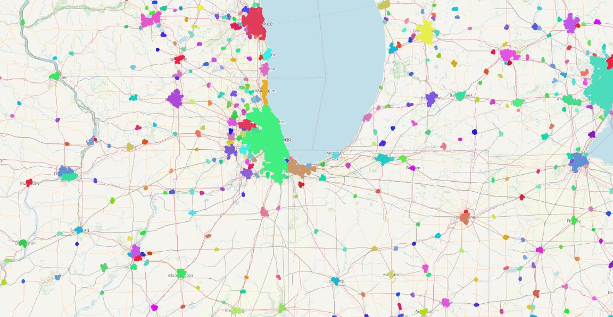
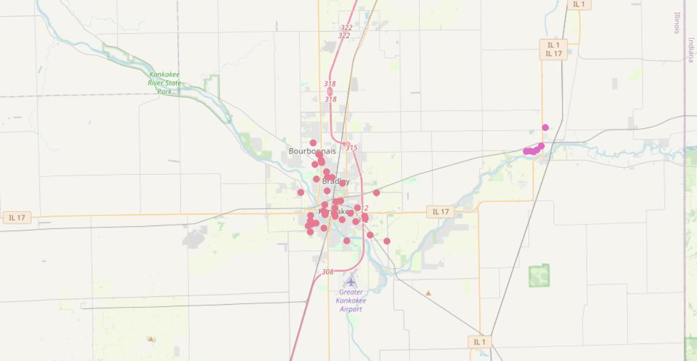
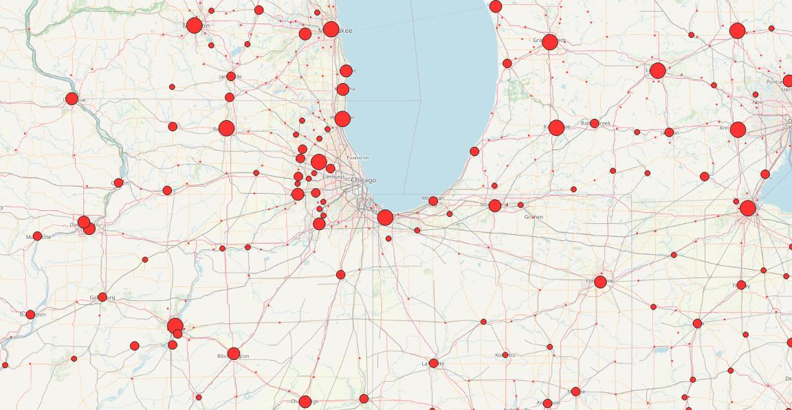
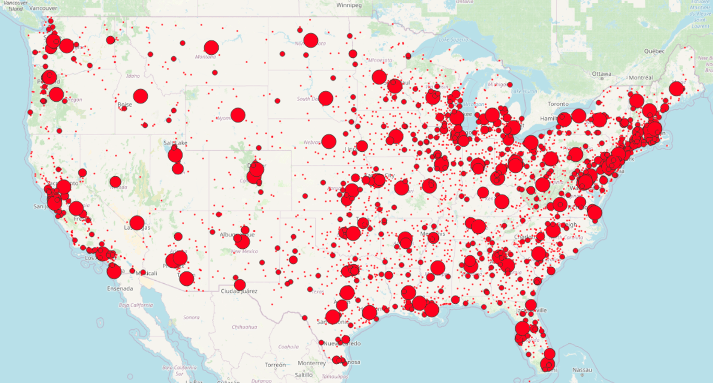

Application of Clustering in Geospatial Analytics
Advanced Techniques of Clustering
There are situations where k-means produces unintuitive and possibly undesirable clusters. This link illustrates these cases.
Scikit-learn has many different methods to solve the shortcomings of K-Means:
- Demo of DBSCAN clustering algorithm
- Demo of HDBSCAN clustering algorithm
- Demo of OPTICS clustering algorithm
- Demo of affinity propagation clustering algorithm
In geospatial data, like cities or neighborhoods, data points follow natural and man-made boundaries rather than perfect circles. Below we see an example of DBSCAN implemented by PostGIS database; where we can use SQL to query such data.
PostGIS extends the capabilities of the PostgreSQL relational database by adding support for storing, indexing, and querying geospatial data.
PostGIS Clustering with DBSCAN
Paul Ramsey · Dec 19, 2023 · 4 min read
A common problem in geospatial analysis is extracting areas of density from point fields. PostGIS has four window clustering functions that take in geometries and return cluster numbers (or NULL for unclustered inputs), which apply different algorithms to the problem of grouping the geometries in the input partitions.
The ST_ClusterDBSCAN function in PostGIS is a quick and easy way to extract clusters from point data. DBSCAN specifically works with density and is well suited for population or density type spatial data. To demonstrate ST_ClusterDBSCAN I’m going to work with the geographic names data, specifically the schools, and show how we can quickly create a U.S. population density map.
Geographic Names Data
Let’s explore clustering using geographic names data.
Create a table to hold the data. Note that the table is generating the points automatically from the longitude/latitude (EPSG:4326) and transforming into a planar projection for the USA (EPSG:5070).
CREATE TABLE geonames (
geonameid integer,
name text,
asciiname text,
alternatenames text,
latitude float8,
longitude float8,
fclass char,
fcode text,
country text,
cc2 text,
admin1 text,
admin2 text,
admin3 text,
admin4 text,
population bigint,
elevation integer,
dem text,
timezone text,
modification date,
geom geometry(point, 5070)
GENERATED ALWAYS AS
(ST_Transform(ST_Point(longitude, latitude, 4326),5070)) STORED
);Now load the table. Note the super fun use of PROGRAM to pull data directly from the web and feed a COPY.
COPY geonames
FROM PROGRAM '(curl http://download.geonames.org/export/dump/US.zip > /tmp/US.zip) && unzip -p /tmp/US.zip US.txt'
WITH (FORMAT CSV, DELIMITER E'\t', HEADER false);(This trick only works using the postgres superuser, since it involves calling a program and writing to system disk. If you do not have superuser access, download and unzip the US.TXT file by hand and load it using COPY from the file.)

Finally, add a spatial index to the geom column.
CREATE INDEX geonames_geom_x
ON geonames
USING GIST (geom);Schools
There are 434 distinct feature codes in the geonames table. We will restrict our analysis to just the 205,848 schools, with an fcode of SCH.
SELECT Count(DISTINCT fcode) FROM geonames;
SELECT Count(fcode) FROM geonames WHERE fcode = 'SCH';Schools are an interesting feature to analyze because there’s a nice strong correlation between the number of schools and the population. There’s a lot of schools! But they are not uniformly distributed.

If we zoom into the midwest, the concentration of schools in populated places pops out. We can use PostGIS to turn this distribution difference into a data set of populated places!
Clustering on Schools
The DBSCAN clustering algorithm is a “density based spatial clustering of applications with noise”. The PostGIS ST_ClusterDBSCAN implementation is a window function that takes three parameters:
- The geometries to be analyzed for clusters.
- A ‘eps’ distance tolerance. Geometries must be within this distance to be added to a cluster.
- A ‘minpoints’ count. If a point is within the ‘eps’ distance of ‘minpoints’ cluster members, it is a “core member” of the cluster.
An input geometry is added to a cluster if it is either:
- A “core” geometry, that is within eps distance of at least minpoints input geometries (including itself); or
- A “border” geometry, that is within eps distance of a core geometry.
How does this play out in practice?
If we zoom further into Chicago, around the suburban/exurban transition, the schools are about 1000 meters apart, sometimes more sometimes less, transitioning out to 2000 meters and more in the exurbs.

For our clusters, we will use:
- A
epsdistance of 2000m - A
minpointsof 5 - A partition on the state code (
admin1) to cut down on the number of cluster numbers.
CREATE TABLE geonames_sch AS
SELECT ST_ClusterDBScan(geom, 2000, 5)
OVER (PARTITION BY admin1) AS cluster, *
FROM geonames
WHERE fcode = 'SCH';The result looks like this, with each cluster given a distinct color, and un-clustered schools rendered transparent.

The smaller clusters look a little arbitrary, but if we zoom in, we can see that even small population centers have been surfaced with this analytical technique.
Here is Kanakee, Illinois, neatly identified as a populated place by its cluster of schools.

Clusters to Points
Now that we have clusters, getting a populated place point is as simple as using the ST_Centroid function.
CREATE TABLE geonames_popplaces AS
SELECT ST_Centroid(ST_Collect(geom))::geometry(Point, 5070) AS geom,
Count(*) AS school_count,
cluster, admin1
FROM geonames_sch
GROUP BY cluster, admin1We have completed the analysis, converting the density difference in school locations into a set of derived populated place points.

Now for the whole population cluster map!

Quick recap
- Create a table
ST_ClusterDBScan- Set an
epsfor distance tolerance - Set a
minpointsto reduce density - Partition on a different field to cut down on the number of cluster numbers.
- Set an
- Create a final table using the
ST_Centroid
Reference
Ramsey, Paul. “PostGIS Clustering with DBSCAN.” Crunchy Data Blog, 19 Dec. 2023, https://www.crunchydata.com/blog/postgis-clustering-with-dbscan.